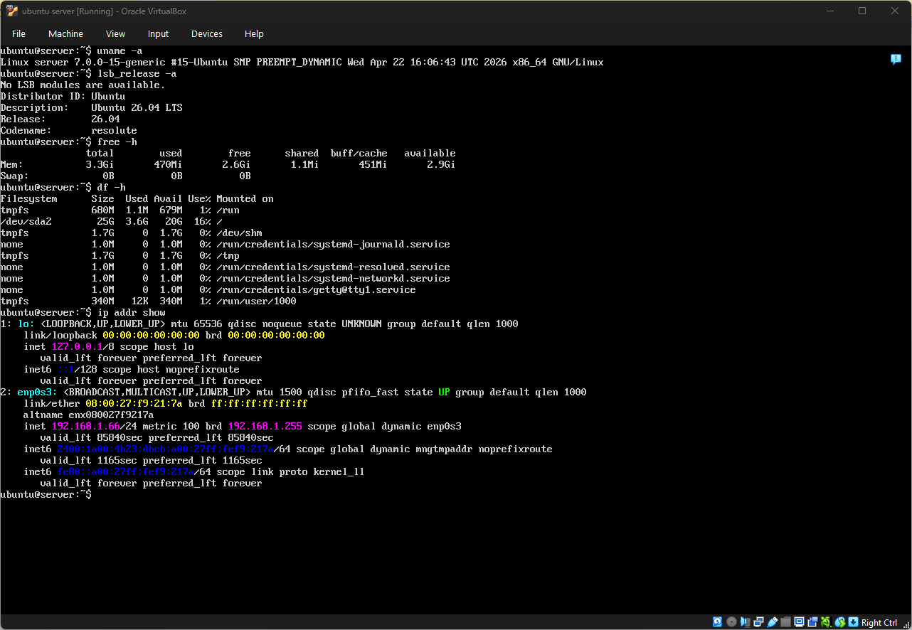
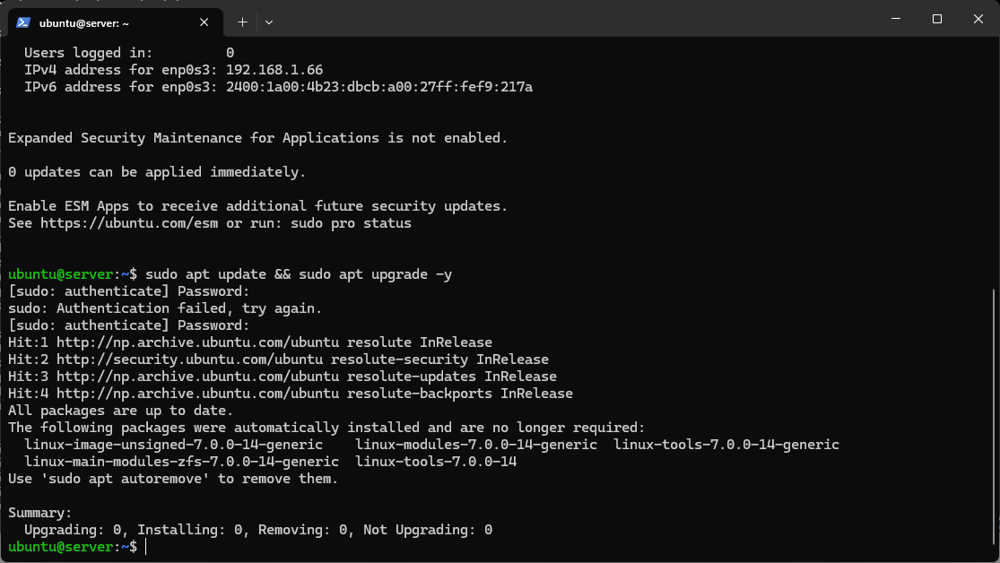

✅ Phase Deliverables
| Deliverable | Status |
|---|---|
| System Architecture Diagram | Done |
| Distribution Selection Justification | Done |
| Workstation Configuration Decision | Done |
| Network Configuration Documentation | Done |
| CLI System Specifications | Done |
🗺️ System Architecture
The dual-system architecture enforces command-line proficiency by requiring all server administration via SSH from the Windows workstation. No graphical interface is used on the server at any point.
OS: Ubuntu Server 26.04 LTS
Type: Headless — no desktop
IP: 192.168.1.66
RAM: 3.3GB | Disk: 25GB
Access: SSH only
OS: Windows 10/11
Tool: PowerShell + OpenSSH
VM Platform: VirtualBox
Connection: ssh ubuntu@192.168.1.66
Role: Administrative access point

🐧 Distribution Selection Justification
After evaluating multiple Linux server distributions, Ubuntu Server 26.04 LTS was selected based on the following criteria:
| Criterion | Ubuntu Server 26.04 | Debian 12 | CentOS Stream 9 |
|---|---|---|---|
| LTS Support | ✅ 5 year LTS | ✅ Until 2028 | ⚠️ Rolling stream |
| Documentation | ✅ Extensive community | ✅ Good | ✅ Enterprise focused |
| Package Manager | APT (familiar) | APT (same) | DNF (different) |
| Security Tools | ✅ AppArmor built-in | ✅ AppArmor available | ✅ SELinux built-in |
| Industry Adoption | ✅ AWS/Azure default | ⚠️ Less common | ✅ Enterprise standard |
| Headless Support | ✅ Native server ISO | ✅ Available | ✅ Available |
💻 Workstation Configuration
Option B selected: Windows host machine with PowerShell OpenSSH client.
Why Option B?
- No need for a second VM — reduces resource usage
- Windows 10/11 includes OpenSSH natively
- PowerShell provides a capable SSH client
- Mirrors real-world cloud administration workflows
- Simpler setup with no additional configuration
Tools Used
- VirtualBox — VM platform
- Windows PowerShell — SSH client
- Windows OpenSSH — built-in SSH
- GitHub Pages — journal hosting
🌐 Network Configuration
| Setting | Value | Purpose |
|---|---|---|
| VirtualBox Adapter | Bridged Adapter | Allows VM to get IP from home router — same network as host |
| Server IP Address | 192.168.1.66 | Static-like DHCP lease — used for all SSH connections |
| SSH Port | 22 (default) | Standard SSH communication port |
| Protocol | SSH over TCP/IP | Encrypted remote administration channel |
💻 CLI System Specifications
All commands executed via SSH from Windows PowerShell. Output captured as evidence below.
CLI System Specifications — Evidence
Commands run directly on server: uname -a, lsb_release -a, free -h, df -h, ip addr show

System Update Evidence
All packages confirmed up to date via sudo apt update && sudo apt upgrade -y

📝 Week 1 Reflection
This week consisted of designing the architecture of the system and making important technical decisions before implementation. The main one was to opt for Ubuntu Server 26.04 LTS instead of alternatives like Debian or CentOS due to its support of AppArmor, good documentation, and compliance with industry cloud standards.
Having installed VirtualBox using a Bridged Adapter ensured that the SSH connection could be established to the server from the Windows machine without needing another VM. The first trial run on CLI proved that the server works fine and uses few resources.
Challenges: Unable to connect via SSH to server with message "Connection refused". It was found out that there was no SSH service running or IP address might have been wrong as revealed through ip addr show command.